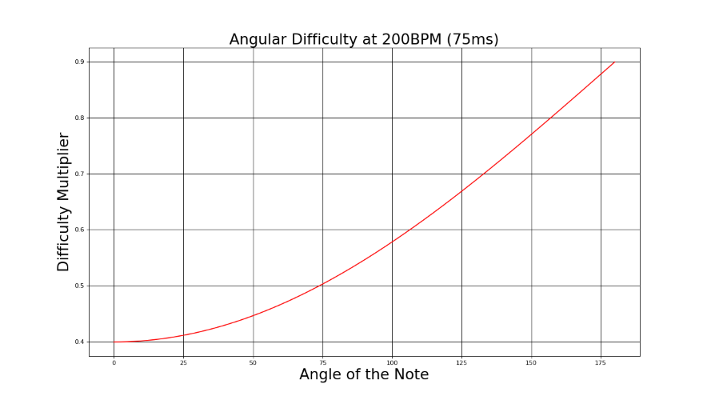
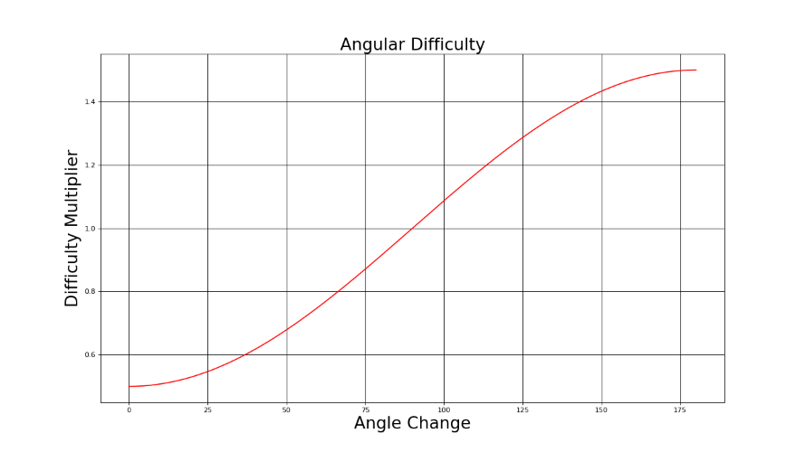
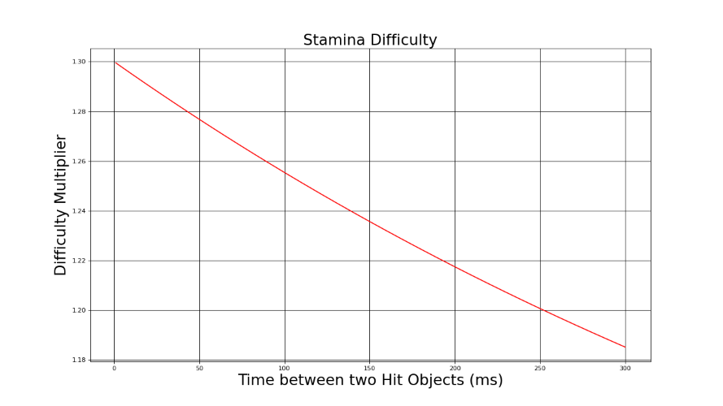

A tool used to quantify the difficulty of Custom Levels in Beat Saber.
How does it work
The calculator works by taking in the data of a beatmaps hit objects and calculating both the speed at which notes must be hit, as well as the angles between each note.
Project Information
Below is a link to the project detailing more information.
Difficulty is calculated using evaluators to evaluate the difficulty of a skillset. The two main skillsets, and the ones I will be talking about, are angular difficulty and stamina difficulty.
Angle
Angle difficulty can be separated into two key components, the actual angle at which you have to hit the note and the difference of angles between two hit objects, or the angle change.

A graph showing how angle the angle of a note affects the difficulty rating.

A graph showing how the change in angle between two notes affects the difficulty rating.
Stamina
Stamina difficulty is mostly represented by taking the time between two hit objects, or the speed at which you must play in order to accurately hit them.

A graph showing how the time between two notes, in milliseconds, affects the difficulty rating.
Performance Points and Penalties
Along with difficulty, the tool has a performance calculator as well, taking into account many factors.
Factors taken into account for performance bonuses and penalties.
Accuracy (The overall accuracy of a play)
Note Jump Speed (The Speed at which hit objects appear)
Length Bonus (Bonus given to really long beatmaps)
Miss Penalty (Penalty applied for missing a hit object)
Future for the Project.
Future plans for this project, along with any other thoughts and comments I have.
Reworks
Rhythm Game mapping is constantly evolving, and this is true for Beat Saber as well. Since there are effectively infinite possibilities when it comes to making a beatmpa, there are certain patterns and mapping styles that can appear that aren't accounted for in the calculator. This is very common in a game like Osu! where mappers will create maps for a 'meta' that are give out too many performance points for the actual difficulty of the map.
Reworks essentially allow for changing certain aspects of the system that were considered overvalued in both difficulty and performance calculation. Because of this, it effectively means the tool will never be perfect, so it will be constantly worked on in order to ensure there is at least some balance with the maps that do currently exist as well as trying to prevent future maps from being weighted too high.
Leaderboard System
This tool isn't currently being used for any other purpose other than curiousity. Many players use the tool to compare theirs and other scores to each other to see the relative performance that players have done compared to each other. Ideally, this would be done automatically through some kind of leaderboard system that allows you to upload your scores and see how it compares instantly.
Creating a external leaderboard and implementing it into the game isn't super difficult, the real difficulty comes in setting up a database, as well as getting a team to help set up a ranking process. For me the latter is harder, as it requires getting a group of capable people together who are passionate about the game to help develope a system that doesn't exist. This is something I really want to create in the future, and hopefully, if all goes well, I should be able to start working on a database and a mod for the game through to next summer.